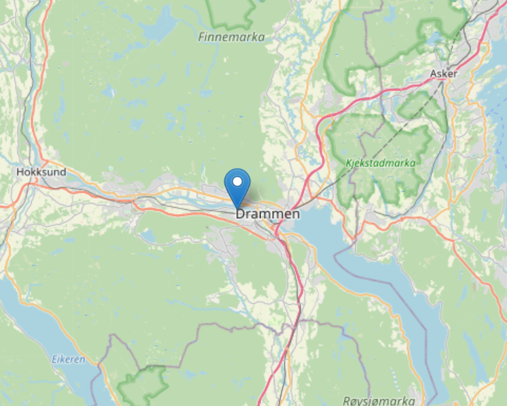
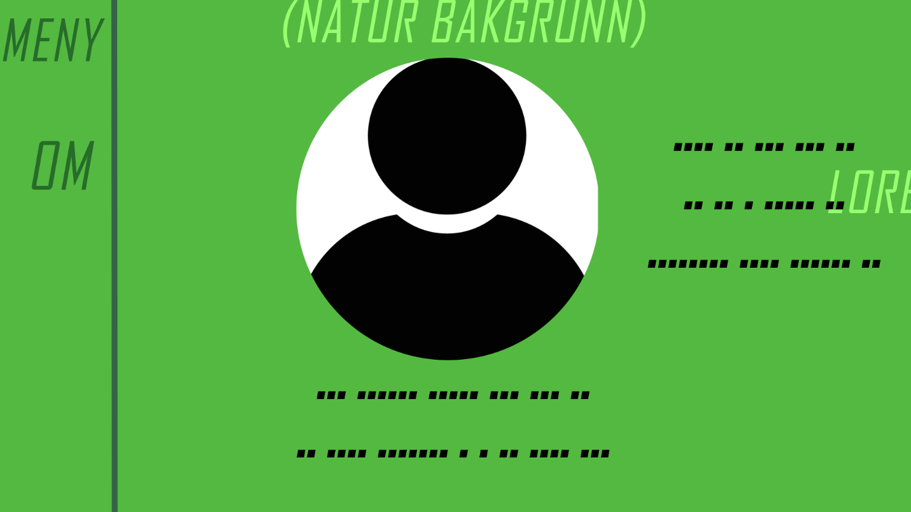

Hjem
Om Meg
Kunnskap

På Vg1 skulle jeg også lage en portefølje. Jeg hadde ikke brukt html og css veldig mye før dette prosjektet, så jeg slet veldig mye. Denne forsiden her er alt jeg fikk til pga jeg slet veldig med grid og flex. Men jeg fikk ivertfall gjort noe, og jeg lærte litt om plassering og slikt underveis i prosjektet.

Et annet prosjekt jeg hadde på Vg1 var å kode en nettside slik at man kunne søke på ulike bryggerier innenfor USA. Både html, css og javascript var inkludert i prosjektet, men jeg kan ikke si at jeg lærte veldig mye av det. Jeg fant ikke igjen til det originale bildet jeg hadde til sluttproduktet, men bildet viser en markør som jeg har plasser på begynnelsen.
